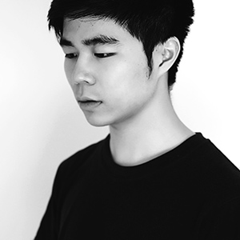

洪涵滴滴 - Hindy 1993 大过年时生于南方的群岛舟山。信仰自然、高效的实用主义设计，愿望自己的作品能带给人们些许帮助。
爱好日本二次元文化，喜欢看漫画和动画（如 SLAM DUNK 和 Clannad）。也喜欢玩些小众的独立游戏，听听音乐，不限风格。
我曾学过平面和插画，现在正致力于软件界面设计，当然用户体验和交互设计也是重要的一环。 关于我对设计的思考记录在了本站的 BLOG 页面，欢迎了解更多。
如您需要设计方面的帮助或只是与我讨论，可联系我的 微博 或 知乎。
Hi. My name is Hindy.
I'm a user interface and icon designer from China. My goal is to provide efficient, clean and creative UI and icon design, corporate identity and user experience, but most importantly, into the job I love each item. I believe that customers should fall in love with their own identity, rather than just accepting mediocre attempt.
If you need some help with the design of the project, or something else, contact me :)
hindy@foxmail.com Instagram / Twitter / Dribbble